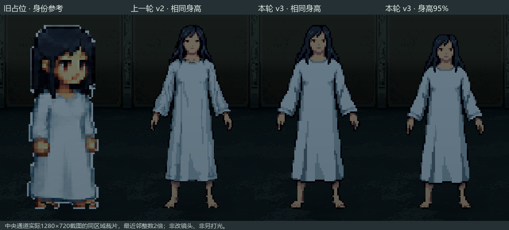
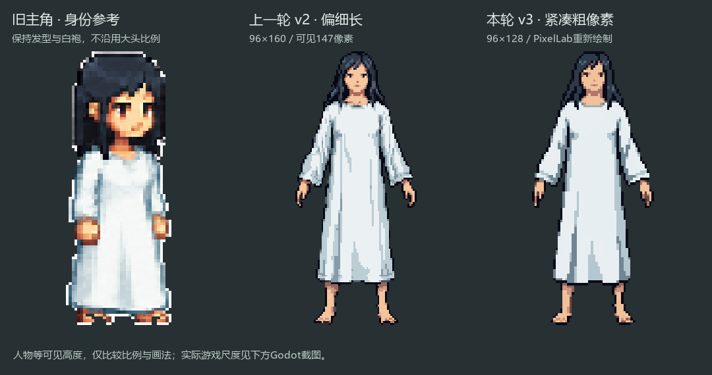
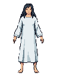
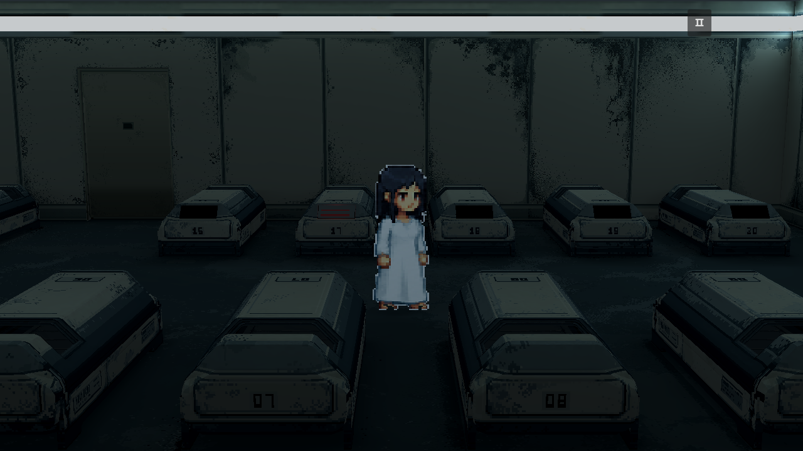
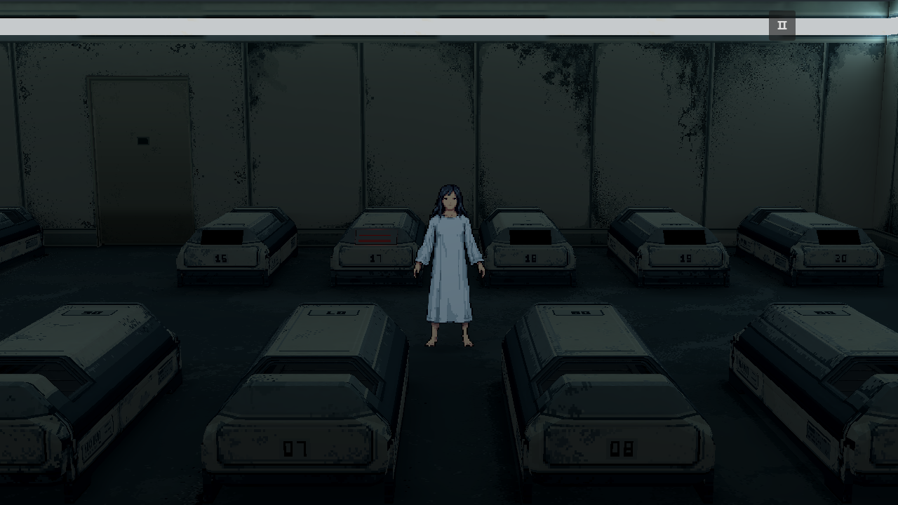
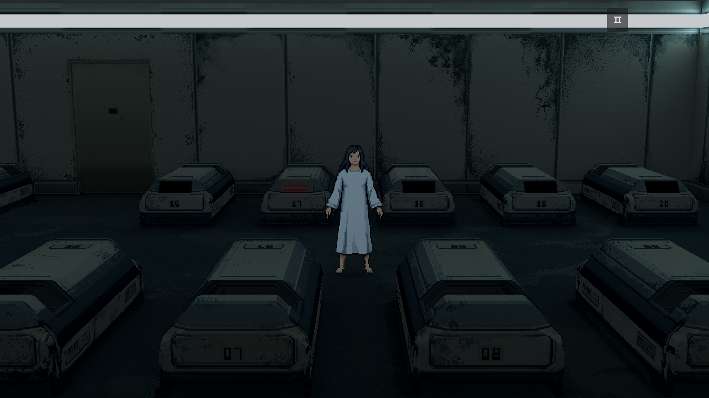
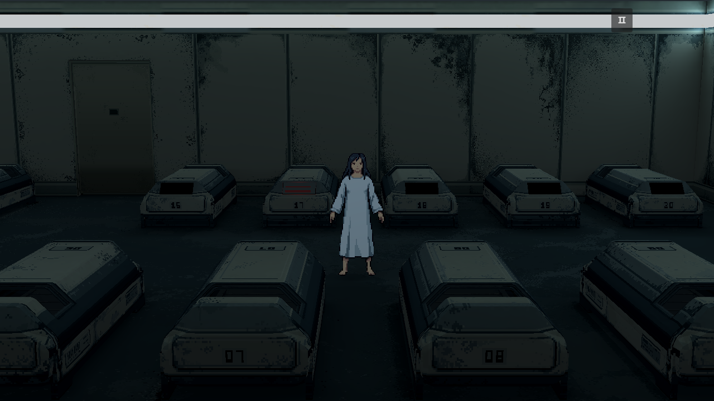
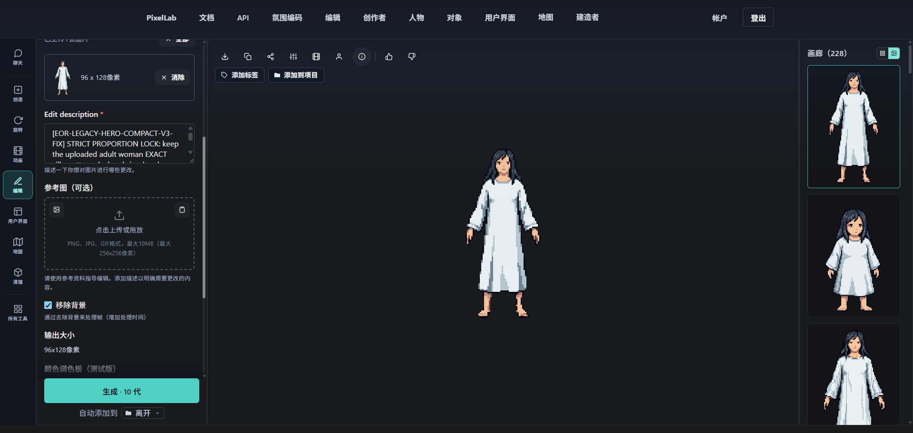

2026-11-17。保留成人小头比例、蓝黑长发和白袍，PixelLab重新概括衣褶与明暗。正式角色与场景没有替换。
制作记录 · 原生PNG · 分层Aseprite · 来源和额度
同一位置先等可见高度比较v2/v3像素画法，再只把v3统一缩小5%。房间镜头、灯光和布局相同。下图为中央机位同区域裁片，最近邻整数2倍；点击后可看原图。

角色沿用现有纸片灯带受光近似，并非最终3D模型的受光验收。1.4025与1.3324米是继承测试角色后用于此对比的可见尺寸，不是新设定的主角真实身高。
| 模式 | 原生可见高度 | 此测试可见高度 | 原生像素／米 |
|---|---|---|---|
| 旧占位 | 96px | 1.4025m | 68.45 |
| v2等高 | 147px | 1.4025m | 104.81 |
| v3等高 | 117px | 1.4025m | 83.42 |
| v3短5% | 117px | 1.3324m | 87.81 |

上图仅为人物等高排版，判断比例和绘画处理，不代表原生像素一致。

全部1280×720，图片可点击打开原生尺寸。每组只换纸片素材及其统一缩放，图中角色区域以外像素完全相同。





共两次Pro请求，第一张大头稿已隔离否决，第二次锁定成人比例；56→76／2000，实扣20。没有上传任何第三方作品图片，没有本地绘画改像素。